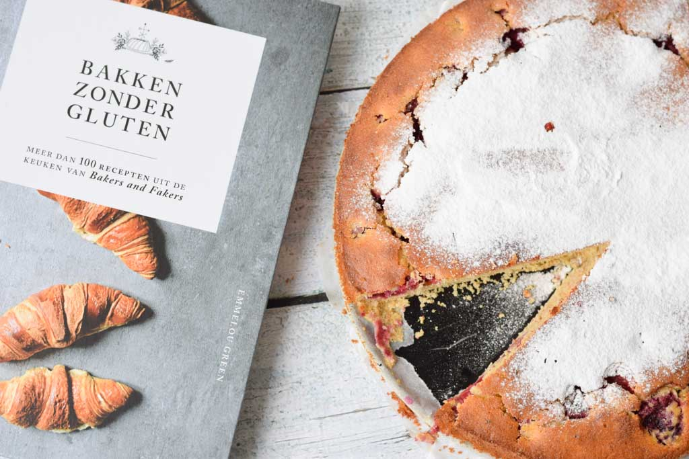
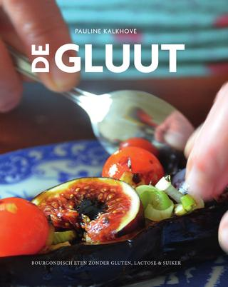
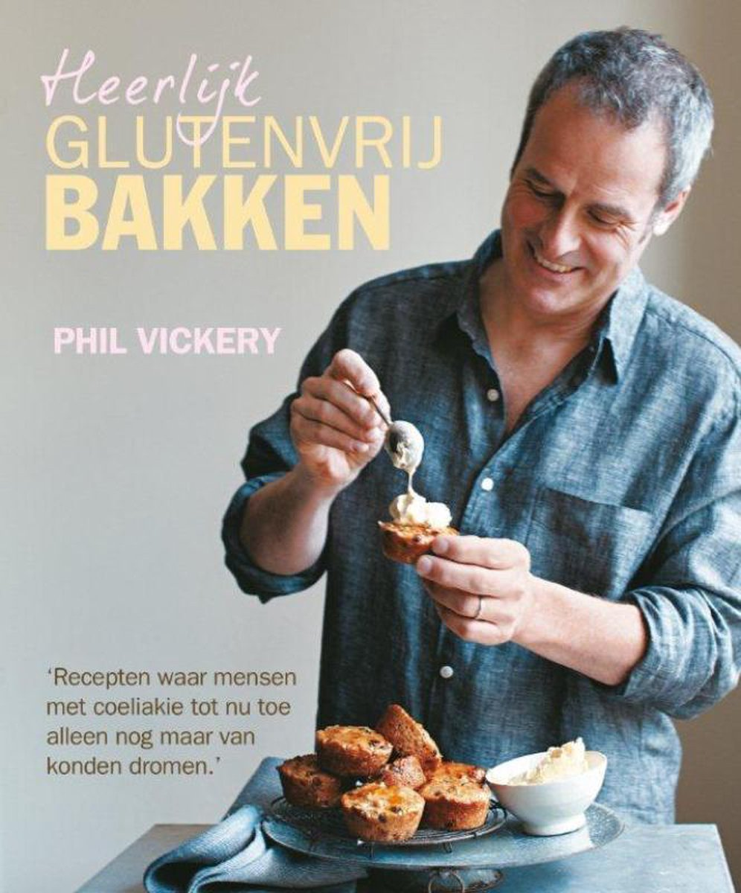
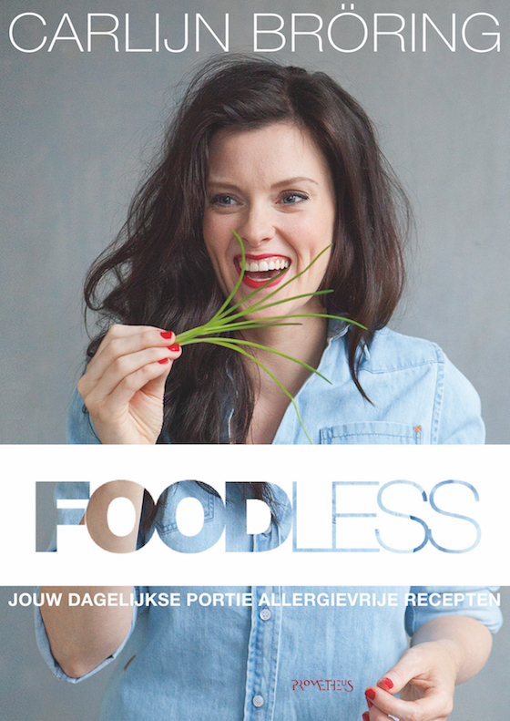
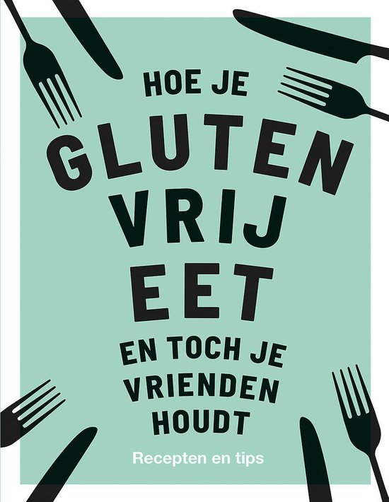

glutenvrij koken en bakken
Elke dag glutenvrij koken en bakken is best een opgave. Er zijn maar weinig glutenvrije kook en bakboeken op de markt. Veel mensen met coeliakie kunnen daarom wel wat tips voor kook en bakboeken gebruiken. Welke kook en bakboeken zijn er? Welke kook en bakboeken zijn aan te raden? Welke kook en bakboeken zijn echt geschikt voor een gluten intolerantie? Hieronder vind je 5 kook en bakboeken die zeker aan te raden zijn!
- Bakken zonder gluten
In dit boek van Emmelou green, bekend van haar blog 'Bakers and Fakers' staan 100 glutenvrije recepten. Met dit boek kan je zonder veel moeite allemaal lekkere recepten maken. Dit bakboek is tijdloos en er staan veel recepten in waarvan je niet wist dat ze glutenvrij konden worden gemaakt.

- de gluut
Dit kookboek van Pauline Kalkhove is gluten, lactose en suikervrij. Het boek staat vol met lekkere bourgondische recepten en mooie foto's. Pauline schreef dit boek niet alleen voor mensen met bijvoorbeeld coeliakie, maar ook voor mensen die geen allergie hebben. Het is namelijk ook goed om af en toe even wat minder gluten, melk en suiker te eten, want zonder dat je het weet krijg je er veel van binnen.

- heerlijk glutenvrij bakken
In dit bakboek van Philip Bailey staan de lekkerste recepten om glutenvrij broden, gebakjes en desserts te maken. Dit is wat de meeste mensen met coeliakie missen, omdat er bijna altijd in brood, gebakjes en dessert wel gluten zitten. Dit is vaak een gemis als mensen op glutenvrij dieet gaan. Het is een goed uitgevoerd boek met mooi foto's en duidelijke, verrassende recepten.

- Foodless
Dit kook en bakboek van Carlijn Bröring is een allergievrij boek met 90 recepten. Het boek heeft zowel kook als bak recepten en is een uitkomst voor mensen die nog niet zo lang allergievrij eten, dus ook voor mensen met coeliakie is dit een prima boek met genoeg inspiratie. Let wel op dat je dit boek op de site van foodless koopt, want de prijzen verschillen erg.

- Hoe je glutenvrij eet en toch je vrienden houdt
Als je coeliake hebt en je gaat op glutenvrij dieet, dan heeft dat niet alleen gevolgen voor jou. De mensen om jou heen moeten daar ook in meegaan, maar hoe makke je lekkere en glutenvrije recepten die ook je partner of vrienden lekkeer vinden? Anna Barnett geeft je in dit boek 50 heerlijke glutenvrij recepten, dat je helpt om te leven zonder compromissen en verontschuldigingen. Ook staan er tips, hacks en trucs in om een betere gluten vermijder te worden.
